Plotting with Pandas#
Table of Contents#
Importing-libraries-and-open-data#
The first thing we do when creating visualizations is to import the necessary packages and read in the dataset we will be working with.
# Importing packages
import pandas as pd
import matplotlib.pyplot as plt
# Read NYC tree data. I downloaded the tree data, which can be read directly from the links below.
# The documents on each dataset are also available from my website.
# You can read 2015 tree census data using pd.read_csv
tree2015 = pd.read_csv('../05/data/2015_Street_Tree_Census.csv')
tree2005 = pd.read_csv('../05/data/2005_Street_Tree_Census.csv')
tree1995 = pd.read_csv('../05/data/1995_Street_Tree_Census.csv')
C:\Users\Wenge\AppData\Local\Temp\ipykernel_46984\244534258.py:5: DtypeWarning: Columns (37) have mixed types. Specify dtype option on import or set low_memory=False.
tree2005 = pd.read_csv('../05/data/2005_Street_Tree_Census.csv')
Initialdata-check-and-cleaning#
Initial-data-checking#
tree2015.head(10)
tree2015.tail(10)
| tree_id | block_id | created_at | tree_dbh | stump_diam | curb_loc | status | health | spc_latin | spc_common | ... | boro_ct | state | latitude | longitude | x_sp | y_sp | council district | census tract | bin | bbl | |
|---|---|---|---|---|---|---|---|---|---|---|---|---|---|---|---|---|---|---|---|---|---|
| 683778 | 200671 | 229928 | 09/03/2015 | 29 | 0 | OnCurb | Alive | Good | Platanus x acerifolia | London planetree | ... | 3053200 | New York | 40.624296 | -73.960344 | 9.952583e+05 | 166726.7165 | 44.0 | 532.0 | 3180008.0 | 3.067170e+09 |
| 683779 | 193070 | 210437 | 08/31/2015 | 27 | 0 | OnCurb | Alive | Good | Platanus x acerifolia | London planetree | ... | 3054800 | New York | 40.609541 | -73.945835 | 9.992893e+05 | 161353.2295 | 48.0 | 548.0 | 3183517.0 | 3.068100e+09 |
| 683780 | 195173 | 304371 | 09/01/2015 | 15 | 0 | OnCurb | Alive | Fair | Platanus x acerifolia | London planetree | ... | 4016900 | New York | 40.746122 | -73.913657 | 1.008175e+06 | 211120.9420 | 26.0 | 169.0 | 4000947.0 | 4.001290e+09 |
| 683781 | 155348 | 230784 | 08/18/2015 | 20 | 0 | OnCurb | Alive | Good | Quercus palustris | pin oak | ... | 3051001 | New York | 40.645694 | -73.958179 | 9.958556e+05 | 174522.7192 | 40.0 | 51001.0 | 3328218.0 | 3.051250e+09 |
| 683782 | 184210 | 504308 | 08/29/2015 | 3 | 0 | OnCurb | Alive | Good | Quercus palustris | pin oak | ... | 2038100 | New York | 40.854570 | -73.899192 | 1.012137e+06 | 250636.4824 | 15.0 | 381.0 | 2013548.0 | 2.031490e+09 |
| 683783 | 155433 | 217978 | 08/18/2015 | 25 | 0 | OnCurb | Alive | Good | Quercus palustris | pin oak | ... | 3051900 | New York | 40.713211 | -73.954944 | 9.967407e+05 | 199121.6363 | 34.0 | 519.0 | 3062513.0 | 3.023690e+09 |
| 683784 | 183795 | 348185 | 08/29/2015 | 7 | 0 | OnCurb | Alive | Good | Cladrastis kentukea | Kentucky yellowwood | ... | 4070700 | New York | 40.715194 | -73.856650 | 1.023989e+06 | 199873.6475 | 29.0 | 707.0 | 4075448.0 | 4.031810e+09 |
| 683785 | 166161 | 401670 | 08/22/2015 | 12 | 0 | OnCurb | Alive | Good | Acer rubrum | red maple | ... | 5020100 | New York | 40.620762 | -74.136517 | 9.463514e+05 | 165466.0763 | 50.0 | 201.0 | 5011657.0 | 5.004080e+09 |
| 683786 | 184028 | 504204 | 08/29/2015 | 9 | 0 | OnCurb | Alive | Good | Acer rubrum | red maple | ... | 2023502 | New York | 40.850828 | -73.903115 | 1.011054e+06 | 249271.9507 | 15.0 | 23502.0 | 2007757.0 | 2.028120e+09 |
| 683787 | 200607 | 306527 | 09/03/2015 | 23 | 0 | OnCurb | Alive | Fair | Acer rubrum | red maple | ... | 4134100 | New York | 40.732165 | -73.787526 | 1.043136e+06 | 206095.5383 | 24.0 | 1341.0 | 4153657.0 | 4.071360e+09 |
10 rows × 45 columns
tree2015.info()
<class 'pandas.core.frame.DataFrame'>
RangeIndex: 683788 entries, 0 to 683787
Data columns (total 45 columns):
# Column Non-Null Count Dtype
--- ------ -------------- -----
0 tree_id 683788 non-null int64
1 block_id 683788 non-null int64
2 created_at 683788 non-null object
3 tree_dbh 683788 non-null int64
4 stump_diam 683788 non-null int64
5 curb_loc 683788 non-null object
6 status 683788 non-null object
7 health 652172 non-null object
8 spc_latin 652169 non-null object
9 spc_common 652169 non-null object
10 steward 164350 non-null object
11 guards 79866 non-null object
12 sidewalk 652172 non-null object
13 user_type 683788 non-null object
14 problems 225844 non-null object
15 root_stone 683788 non-null object
16 root_grate 683788 non-null object
17 root_other 683788 non-null object
18 trunk_wire 683788 non-null object
19 trnk_light 683788 non-null object
20 trnk_other 683788 non-null object
21 brch_light 683788 non-null object
22 brch_shoe 683788 non-null object
23 brch_other 683788 non-null object
24 address 683788 non-null object
25 postcode 683788 non-null int64
26 zip_city 683788 non-null object
27 community board 683788 non-null int64
28 borocode 683788 non-null int64
29 borough 683788 non-null object
30 cncldist 683788 non-null int64
31 st_assem 683788 non-null int64
32 st_senate 683788 non-null int64
33 nta 683788 non-null object
34 nta_name 683788 non-null object
35 boro_ct 683788 non-null int64
36 state 683788 non-null object
37 latitude 683788 non-null float64
38 longitude 683788 non-null float64
39 x_sp 683788 non-null float64
40 y_sp 683788 non-null float64
41 council district 677269 non-null float64
42 census tract 677269 non-null float64
43 bin 674229 non-null float64
44 bbl 674229 non-null float64
dtypes: float64(8), int64(11), object(26)
memory usage: 234.8+ MB
# check the index
tree2015.index
RangeIndex(start=0, stop=683788, step=1)
#check the columns
tree2015.columns
Index(['tree_id', 'block_id', 'created_at', 'tree_dbh', 'stump_diam',
'curb_loc', 'status', 'health', 'spc_latin', 'spc_common', 'steward',
'guards', 'sidewalk', 'user_type', 'problems', 'root_stone',
'root_grate', 'root_other', 'trunk_wire', 'trnk_light', 'trnk_other',
'brch_light', 'brch_shoe', 'brch_other', 'address', 'postcode',
'zip_city', 'community board', 'borocode', 'borough', 'cncldist',
'st_assem', 'st_senate', 'nta', 'nta_name', 'boro_ct', 'state',
'latitude', 'longitude', 'x_sp', 'y_sp', 'council district',
'census tract', 'bin', 'bbl'],
dtype='object')
tree1995.columns
Index(['RecordId', 'Address', 'House_Number', 'Street', 'Postcode_Original',
'Community Board_Original', 'Site', 'Species', 'Diameter', 'Condition',
'Wires', 'Sidewalk_Condition', 'Support_Structure', 'Borough', 'X', 'Y',
'Longitude', 'Latitude', 'CB_New', 'Zip_New', 'CensusTract_2010',
'CensusBlock_2010', 'NTA_2010', 'SegmentID', 'Spc_Common', 'Spc_Latin',
'Location', 'Council District', 'BIN', 'BBL'],
dtype='object')
tree2015.shape
(683788, 45)
### Select subsets <a id=2.2></a>
tree2015['borough']
0 Queens
1 Queens
2 Brooklyn
3 Brooklyn
4 Brooklyn
...
683783 Brooklyn
683784 Queens
683785 Staten Island
683786 Bronx
683787 Queens
Name: borough, Length: 683788, dtype: object
tree2015.loc[0:4]
| tree_id | block_id | created_at | tree_dbh | stump_diam | curb_loc | status | health | spc_latin | spc_common | ... | boro_ct | state | latitude | longitude | x_sp | y_sp | council district | census tract | bin | bbl | |
|---|---|---|---|---|---|---|---|---|---|---|---|---|---|---|---|---|---|---|---|---|---|
| 0 | 180683 | 348711 | 08/27/2015 | 3 | 0 | OnCurb | Alive | Fair | Acer rubrum | red maple | ... | 4073900 | New York | 40.723092 | -73.844215 | 1027431.148 | 202756.7687 | 29.0 | 739.0 | 4052307.0 | 4.022210e+09 |
| 1 | 200540 | 315986 | 09/03/2015 | 21 | 0 | OnCurb | Alive | Fair | Quercus palustris | pin oak | ... | 4097300 | New York | 40.794111 | -73.818679 | 1034455.701 | 228644.8374 | 19.0 | 973.0 | 4101931.0 | 4.044750e+09 |
| 2 | 204026 | 218365 | 09/05/2015 | 3 | 0 | OnCurb | Alive | Good | Gleditsia triacanthos var. inermis | honeylocust | ... | 3044900 | New York | 40.717581 | -73.936608 | 1001822.831 | 200716.8913 | 34.0 | 449.0 | 3338310.0 | 3.028870e+09 |
| 3 | 204337 | 217969 | 09/05/2015 | 10 | 0 | OnCurb | Alive | Good | Gleditsia triacanthos var. inermis | honeylocust | ... | 3044900 | New York | 40.713537 | -73.934456 | 1002420.358 | 199244.2531 | 34.0 | 449.0 | 3338342.0 | 3.029250e+09 |
| 4 | 189565 | 223043 | 08/30/2015 | 21 | 0 | OnCurb | Alive | Good | Tilia americana | American linden | ... | 3016500 | New York | 40.666778 | -73.975979 | 990913.775 | 182202.4260 | 39.0 | 165.0 | 3025654.0 | 3.010850e+09 |
5 rows × 45 columns
tree2015.iloc[0:4]
| tree_id | block_id | created_at | tree_dbh | stump_diam | curb_loc | status | health | spc_latin | spc_common | ... | boro_ct | state | latitude | longitude | x_sp | y_sp | council district | census tract | bin | bbl | |
|---|---|---|---|---|---|---|---|---|---|---|---|---|---|---|---|---|---|---|---|---|---|
| 0 | 180683 | 348711 | 08/27/2015 | 3 | 0 | OnCurb | Alive | Fair | Acer rubrum | red maple | ... | 4073900 | New York | 40.723092 | -73.844215 | 1027431.148 | 202756.7687 | 29.0 | 739.0 | 4052307.0 | 4.022210e+09 |
| 1 | 200540 | 315986 | 09/03/2015 | 21 | 0 | OnCurb | Alive | Fair | Quercus palustris | pin oak | ... | 4097300 | New York | 40.794111 | -73.818679 | 1034455.701 | 228644.8374 | 19.0 | 973.0 | 4101931.0 | 4.044750e+09 |
| 2 | 204026 | 218365 | 09/05/2015 | 3 | 0 | OnCurb | Alive | Good | Gleditsia triacanthos var. inermis | honeylocust | ... | 3044900 | New York | 40.717581 | -73.936608 | 1001822.831 | 200716.8913 | 34.0 | 449.0 | 3338310.0 | 3.028870e+09 |
| 3 | 204337 | 217969 | 09/05/2015 | 10 | 0 | OnCurb | Alive | Good | Gleditsia triacanthos var. inermis | honeylocust | ... | 3044900 | New York | 40.713537 | -73.934456 | 1002420.358 | 199244.2531 | 34.0 | 449.0 | 3338342.0 | 3.029250e+09 |
4 rows × 45 columns
# Two ways to print selected columns and indices
#tree2015.loc[0:4].borough]
tree2015.loc[0:4,'borough']
0 Queens
1 Queens
2 Brooklyn
3 Brooklyn
4 Brooklyn
Name: borough, dtype: object
# Extract information for certain columns
tree2015[['tree_id', 'tree_dbh','spc_common','borough']]
| tree_id | tree_dbh | spc_common | borough | |
|---|---|---|---|---|
| 0 | 180683 | 3 | red maple | Queens |
| 1 | 200540 | 21 | pin oak | Queens |
| 2 | 204026 | 3 | honeylocust | Brooklyn |
| 3 | 204337 | 10 | honeylocust | Brooklyn |
| 4 | 189565 | 21 | American linden | Brooklyn |
| ... | ... | ... | ... | ... |
| 683783 | 155433 | 25 | pin oak | Brooklyn |
| 683784 | 183795 | 7 | Kentucky yellowwood | Queens |
| 683785 | 166161 | 12 | red maple | Staten Island |
| 683786 | 184028 | 9 | red maple | Bronx |
| 683787 | 200607 | 23 | red maple | Queens |
683788 rows × 4 columns
# check tree dbh > 50 in
tree2015[tree2015['tree_dbh'] > 50]['borough']
#tree2015[tree2015['tree_dbh'] > 50].borough
2405 Brooklyn
3738 Queens
4887 Staten Island
6724 Staten Island
10083 Bronx
...
675265 Queens
677954 Queens
679894 Queens
681736 Queens
682788 Bronx
Name: borough, Length: 364, dtype: object
tree2015[tree2015['tree_dbh'] > 50].spc_common
#tree2015[tree2015['tree_dbh'] > 50].size
#tree2015[tree2015['tree_dbh'] > 50].count()
2405 swamp white oak
3738 silver maple
4887 silver maple
6724 pin oak
10083 honeylocust
...
675265 pin oak
677954 silver maple
679894 white oak
681736 pin oak
682788 NaN
Name: spc_common, Length: 364, dtype: object
#the isin() conditional function returns a True for each row the values are in the provided list.
#To filter the rows based on such a function, use the conditional function inside the selection brackets [].
# find which trees in Mahanttan.
#tree2015[tree2015['borough'].isin(['Manhattan'])].count()
tree2015[tree2015['borough'] == 'Manhattan'].count()
tree2015[ (tree2015['borough'] == 'Manhattan') & (tree2015['tree_dbh'] > 50) ]
| tree_id | block_id | created_at | tree_dbh | stump_diam | curb_loc | status | health | spc_latin | spc_common | ... | boro_ct | state | latitude | longitude | x_sp | y_sp | council district | census tract | bin | bbl | |
|---|---|---|---|---|---|---|---|---|---|---|---|---|---|---|---|---|---|---|---|---|---|
| 100308 | 304388 | 109033 | 10/10/2015 | 228 | 0 | OnCurb | Alive | Fair | Pyrus calleryana | Callery pear | ... | 1019000 | New York | 40.802178 | -73.948116 | 9.986145e+05 | 231536.3549 | 9.0 | 190.0 | 1051434.0 | 1.016010e+09 |
| 100348 | 277770 | 100613 | 10/02/2015 | 88 | 0 | OnCurb | Alive | Good | Pyrus calleryana | Callery pear | ... | 1031703 | New York | 40.717307 | -74.013326 | 9.805560e+05 | 200611.2196 | 1.0 | 31703.0 | 1085459.0 | 1.000160e+09 |
| 104376 | 312545 | 110893 | 10/12/2015 | 120 | 0 | OnCurb | Alive | Good | Quercus phellos | willow oak | ... | 1025300 | New York | 40.843756 | -73.937922 | 1.001426e+06 | 246686.6182 | 10.0 | 253.0 | 1063468.0 | 1.021410e+09 |
| 106182 | 296329 | 107426 | 10/08/2015 | 74 | 0 | OnCurb | Alive | Good | Ginkgo biloba | ginkgo | ... | 1012000 | New York | 40.768142 | -73.962694 | 9.945836e+05 | 219133.6559 | 4.0 | 120.0 | 1042493.0 | 1.014040e+09 |
| 131451 | 312202 | 108838 | 10/12/2015 | 109 | 0 | OnCurb | Alive | Good | Gleditsia triacanthos var. inermis | honeylocust | ... | 1023501 | New York | 40.830994 | -73.943261 | 9.999516e+05 | 242035.9796 | 7.0 | 23501.0 | 1061681.0 | 1.020680e+09 |
| 270493 | 476317 | 602575 | 11/20/2015 | 318 | 0 | OnCurb | Alive | Good | Quercus palustris | pin oak | ... | 1027500 | New York | 40.850879 | -73.943067 | 1.000001e+06 | 249280.8739 | 10.0 | 265.0 | 1064326.0 | 1.021770e+09 |
| 304556 | 523306 | 602362 | 12/16/2015 | 54 | 0 | OffsetFromCurb | Alive | Good | Tilia tomentosa | silver linden | ... | 1018700 | New York | 40.799399 | -73.973228 | 9.916623e+05 | 230520.6148 | 6.0 | 187.0 | 1057147.0 | 1.018890e+09 |
| 309449 | 523465 | 602362 | 12/16/2015 | 52 | 0 | OffsetFromCurb | Alive | Good | Ulmus americana | American elm | ... | 1019900 | New York | 40.805824 | -73.968232 | 9.930446e+05 | 232862.2076 | NaN | NaN | NaN | NaN |
| 655873 | 151093 | 110720 | 08/16/2015 | 62 | 0 | OffsetFromCurb | Alive | Good | Ulmus americana | American elm | ... | 1024301 | New York | 40.837050 | -73.939971 | 1.000861e+06 | 244242.9338 | 7.0 | 24301.0 | 1062892.0 | 1.021210e+09 |
| 660328 | 176434 | 105392 | 08/26/2015 | 199 | 0 | OnCurb | Alive | Good | Quercus phellos | willow oak | ... | 1006400 | New York | 40.738028 | -73.981496 | 9.893780e+05 | 208160.4640 | 2.0 | 64.0 | 1019657.0 | 1.009030e+09 |
10 rows × 45 columns
# Select specific rows and columns
tree2015.loc[tree2015['tree_dbh'] > 50, 'spc_common']
tree2015.loc[0:4, 'spc_common']
0 red maple
1 pin oak
2 honeylocust
3 honeylocust
4 American linden
Name: spc_common, dtype: object
# update the column value
#tree2015[tree2015.borocode ==5].borough
#tree2005[tree2005.borocode == 5].boroname
tree2005.loc[tree2005.borocode == 5, 'boroname'] = 'Staten Island'
tree2005[tree2005.borocode == 5].boroname
429490 Staten Island
429508 Staten Island
429574 Staten Island
429676 Staten Island
429872 Staten Island
...
592367 Staten Island
592368 Staten Island
592369 Staten Island
592370 Staten Island
592371 Staten Island
Name: boroname, Length: 99701, dtype: object
Single-variable-visualization#
There are two types of variables we can visualize: categorical and numerical variables.
Categorical variables are not numbers. They are variables such as specise name, borough name. Numbers can also be encoded as categorical variables such as zipcode (“11360”,”11428”,”90210”).
Numerical variables are numbers. They are variables such as tree dbh values
Categorical Variables #
# Number of tree counts by species
# treecounts = tree2015.groupby('spc_common').size()
tree2015.groupby('borough').size()
borough
Bronx 85203
Brooklyn 177293
Manhattan 65423
Queens 250551
Staten Island 105318
dtype: int64
tree2015.groupby('borough').count()
| tree_id | block_id | created_at | tree_dbh | stump_diam | curb_loc | status | health | spc_latin | spc_common | ... | boro_ct | state | latitude | longitude | x_sp | y_sp | council district | census tract | bin | bbl | |
|---|---|---|---|---|---|---|---|---|---|---|---|---|---|---|---|---|---|---|---|---|---|
| borough | |||||||||||||||||||||
| Bronx | 85203 | 85203 | 85203 | 85203 | 85203 | 85203 | 85203 | 80585 | 80584 | 80584 | ... | 85203 | 85203 | 85203 | 85203 | 85203 | 85203 | 84266 | 84266 | 83825 | 83825 |
| Brooklyn | 177293 | 177293 | 177293 | 177293 | 177293 | 177293 | 177293 | 169744 | 169744 | 169744 | ... | 177293 | 177293 | 177293 | 177293 | 177293 | 177293 | 176788 | 176788 | 176191 | 176191 |
| Manhattan | 65423 | 65423 | 65423 | 65423 | 65423 | 65423 | 65423 | 62427 | 62428 | 62428 | ... | 65423 | 65423 | 65423 | 65423 | 65423 | 65423 | 63616 | 63616 | 63301 | 63301 |
| Queens | 250551 | 250551 | 250551 | 250551 | 250551 | 250551 | 250551 | 237974 | 237970 | 237970 | ... | 250551 | 250551 | 250551 | 250551 | 250551 | 250551 | 247923 | 247923 | 246777 | 246777 |
| Staten Island | 105318 | 105318 | 105318 | 105318 | 105318 | 105318 | 105318 | 101442 | 101443 | 101443 | ... | 105318 | 105318 | 105318 | 105318 | 105318 | 105318 | 104676 | 104676 | 104135 | 104135 |
5 rows × 44 columns
# Number of tree counts by species
# treecounts = tree2015.groupby('spc_common').size()
#tree2015.groupby('borough').size()
tree2015.groupby('borough').count()
| tree_id | block_id | created_at | tree_dbh | stump_diam | curb_loc | status | health | spc_latin | spc_common | ... | boro_ct | state | latitude | longitude | x_sp | y_sp | council district | census tract | bin | bbl | |
|---|---|---|---|---|---|---|---|---|---|---|---|---|---|---|---|---|---|---|---|---|---|
| borough | |||||||||||||||||||||
| Bronx | 85203 | 85203 | 85203 | 85203 | 85203 | 85203 | 85203 | 80585 | 80584 | 80584 | ... | 85203 | 85203 | 85203 | 85203 | 85203 | 85203 | 84266 | 84266 | 83825 | 83825 |
| Brooklyn | 177293 | 177293 | 177293 | 177293 | 177293 | 177293 | 177293 | 169744 | 169744 | 169744 | ... | 177293 | 177293 | 177293 | 177293 | 177293 | 177293 | 176788 | 176788 | 176191 | 176191 |
| Manhattan | 65423 | 65423 | 65423 | 65423 | 65423 | 65423 | 65423 | 62427 | 62428 | 62428 | ... | 65423 | 65423 | 65423 | 65423 | 65423 | 65423 | 63616 | 63616 | 63301 | 63301 |
| Queens | 250551 | 250551 | 250551 | 250551 | 250551 | 250551 | 250551 | 237974 | 237970 | 237970 | ... | 250551 | 250551 | 250551 | 250551 | 250551 | 250551 | 247923 | 247923 | 246777 | 246777 |
| Staten Island | 105318 | 105318 | 105318 | 105318 | 105318 | 105318 | 105318 | 101442 | 101443 | 101443 | ... | 105318 | 105318 | 105318 | 105318 | 105318 | 105318 | 104676 | 104676 | 104135 | 104135 |
5 rows × 44 columns
Pandas plotting functions:
df.plot.area
df.plot.barh
df.plot.density
df.plot.hist
df.plot.line
df.plot.scatter
df.plot.bar
df.plot.box
df.plot.hexbin
df.plot.kde
df.plot.pie
https://pandas.pydata.org/pandas-docs/stable/user_guide/visualization.html#visualization
#plot a bar chart
#tree2015.groupby('borough').size().plot.bar(title = 'NYC 2015 Tree Count')
treecount_2015 = tree2015.groupby('borough').size()
print(type(treecount_2015))
treecount_2015.plot.bar(title = 'NYC 2015 Tree Count')
#treecount_2015.plot.barh(title = 'NYC 2015 Tree Count')
plt.xticks(rotation = 30, horizontalalignment = 'center')
plt.xlabel('Borough')
plt.ylabel('Tree Count')
<class 'pandas.core.series.Series'>
Text(0, 0.5, 'Tree Count')

# create a df to include all tree counts
treecount = pd.DataFrame({
'2015': tree2015.groupby('borough').size(),
'2005': tree2005.groupby('boroname').size()}
)
treecount
| 2015 | 2005 | |
|---|---|---|
| Bronx | 85203 | 59925 |
| Brooklyn | 177293 | 142852 |
| Manhattan | 65423 | 49886 |
| Queens | 250551 | 240008 |
| Staten Island | 105318 | 99701 |
treecount.plot(kind = 'bar')
plt.xticks(rotation = 30, horizontalalignment = 'center')
plt.title('NYC Tree Counts in 1995, 2005, and 2015')
plt.xlabel('Borough')
plt.ylabel('Tree Count')
Text(0, 0.5, 'Tree Count')
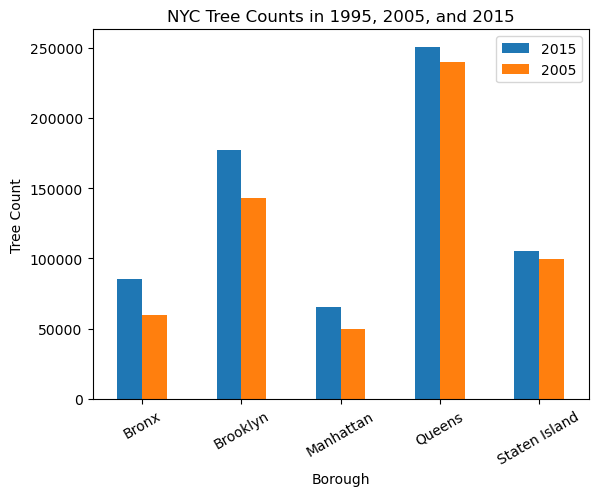
treecount.plot(kind = 'bar', stacked = True)
plt.xticks(rotation = 30, horizontalalignment = 'center')
plt.title('NYC Tree Counts in 1995, 2005, and 2015')
plt.xlabel('Borough')
plt.ylabel('Tree Count')
Text(0, 0.5, 'Tree Count')
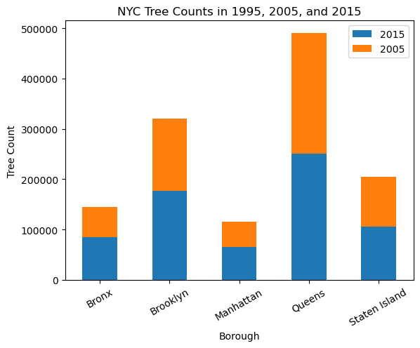
# horizontal bar
tree2005.groupby('boroname').size().plot(kind = 'barh', title = 'NYC 2005 Tree Count')
#tree2005.groupby('boroname').size().plot.barh(title = 'NYC 2005 Tree Count')
plt.xticks(rotation = 30, horizontalalignment = 'center')
plt.xlabel('Borough')
plt.ylabel('Tree Count')
Text(0, 0.5, 'Tree Count')
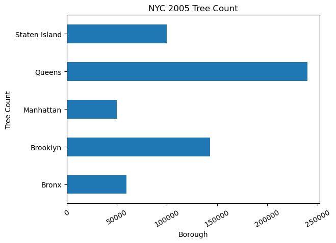
pie Graphs#
treecount.plot.pie(title = 'NYC Tree Count', legend=False, startangle=180, autopct='%1.1f%%', subplots=True, figsize=(15,10))
array([<Axes: ylabel='2015'>, <Axes: ylabel='2005'>], dtype=object)
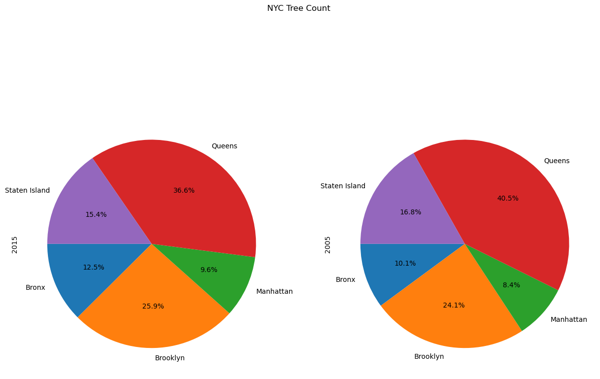
# pie chart
treecount2015 = tree2015.groupby('borough').size()
#treecount2015.plot.pie(y='Tree Count',title = 'NYC 2015 Tree Count', legend=False, startangle=180, autopct='%1.1f%%')
treecount2015.plot.pie(y='Tree Count',title = 'NYC 2015 Tree Count', legend=False, startangle=40, autopct='%1.1f%%')
<Axes: title={'center': 'NYC 2015 Tree Count'}>
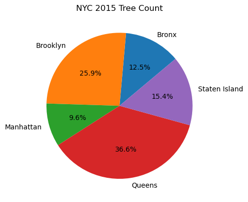
treecount2015 = tree2015.groupby('spc_common').size()
print(treecount2015[0:10])
treecount2015_sorted = treecount2015.sort_values(ascending=False)
treecount2015_sorted[0:10]
spc_common
'Schubert' chokecherry 4888
American beech 273
American elm 7975
American hophornbeam 1081
American hornbeam 1517
American larch 46
American linden 13530
Amur cork tree 183
Amur maackia 2197
Amur maple 2049
dtype: int64
spc_common
London planetree 87014
honeylocust 64264
Callery pear 58931
pin oak 53185
Norway maple 34189
littleleaf linden 29742
cherry 29279
Japanese zelkova 29258
ginkgo 21024
Sophora 19338
dtype: int64
tree2015.groupby('spc_common').size().plot(kind = 'pie')
<Axes: >
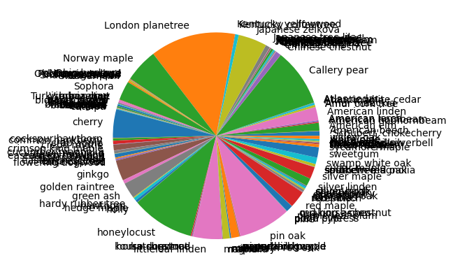
# find the top 10 dominant species
treecount2015 = tree2015.groupby('spc_common').size()
treecount2015_sorted = treecount2015.sort_values(ascending=False)
treecount2015_sorted[0:10]
spc_common
London planetree 87014
honeylocust 64264
Callery pear 58931
pin oak 53185
Norway maple 34189
littleleaf linden 29742
cherry 29279
Japanese zelkova 29258
ginkgo 21024
Sophora 19338
dtype: int64
# pie chart for top ten dominant species
treecount2015_sorted[0:10].plot.pie(autopct='%1.1f%%', title ='Top 10 Dominant Species in 2015')
<Axes: title={'center': 'Top 10 Dominant Species in 2015'}>

Line Graphs#
tree2015['tree_dbh'].plot()
<Axes: >
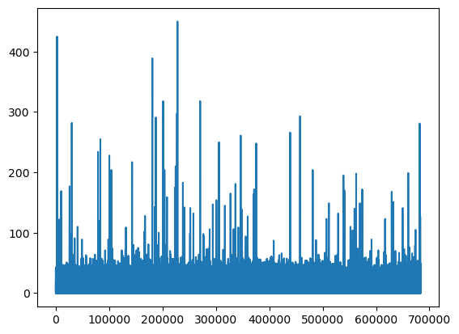
Numerical Variables #
Histogram #
Pandas has multiple ways to do historgrams
pd.DataFrame.hist(column=’your_data_column’)
pd.DataFrame.plot(kind=’hist’)
pd.DataFrame.plot.hist()
#tree2015.hist(column='tree_dbh', bins=200)
tree2015.hist('tree_dbh', bins=200,facecolor='c')
array([[<Axes: title={'center': 'tree_dbh'}>]], dtype=object)
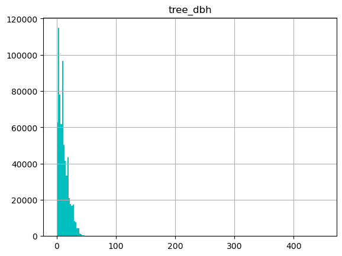
tree2015['tree_dbh'].plot(kind='hist', bins=200)
#tree2015.plot(kind='hist, column='tree_dbh', bins=200)
<Axes: ylabel='Frequency'>

tree2015['tree_dbh'].plot.hist(bins=200)
<Axes: ylabel='Frequency'>
tree2015.plot.hist(bins=200)
<Axes: ylabel='Frequency'>
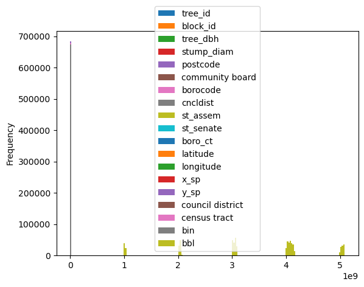
tree2015_dbh = tree2015[['tree_dbh','stump_diam']]
tree2015_dbh.plot.hist(bins=200)
<Axes: ylabel='Frequency'>
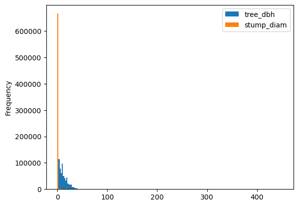
#tree2015.groupby(['spc_common'], sort=False).hist(column='tree_dbh', bins=200, figsize=(5,2))
tree2015['tree_dbh'].hist(by=tree2015['spc_common'], figsize=(15,15))
array([[<Axes: title={'center': "'Schubert' chokecherry"}>,
<Axes: title={'center': 'American beech'}>,
<Axes: title={'center': 'American elm'}>,
<Axes: title={'center': 'American hophornbeam'}>,
<Axes: title={'center': 'American hornbeam'}>,
<Axes: title={'center': 'American larch'}>,
<Axes: title={'center': 'American linden'}>,
<Axes: title={'center': 'Amur cork tree'}>,
<Axes: title={'center': 'Amur maackia'}>,
<Axes: title={'center': 'Amur maple'}>,
<Axes: title={'center': 'Atlantic white cedar'}>],
[<Axes: title={'center': 'Atlas cedar'}>,
<Axes: title={'center': 'Callery pear'}>,
<Axes: title={'center': 'Chinese chestnut'}>,
<Axes: title={'center': 'Chinese elm'}>,
<Axes: title={'center': 'Chinese fringetree'}>,
<Axes: title={'center': 'Chinese tree lilac'}>,
<Axes: title={'center': 'Cornelian cherry'}>,
<Axes: title={'center': 'Douglas-fir'}>,
<Axes: title={'center': 'English oak'}>,
<Axes: title={'center': 'European alder'}>,
<Axes: title={'center': 'European beech'}>],
[<Axes: title={'center': 'European hornbeam'}>,
<Axes: title={'center': 'Himalayan cedar'}>,
<Axes: title={'center': 'Japanese hornbeam'}>,
<Axes: title={'center': 'Japanese maple'}>,
<Axes: title={'center': 'Japanese snowbell'}>,
<Axes: title={'center': 'Japanese tree lilac'}>,
<Axes: title={'center': 'Japanese zelkova'}>,
<Axes: title={'center': 'Kentucky coffeetree'}>,
<Axes: title={'center': 'Kentucky yellowwood'}>,
<Axes: title={'center': 'London planetree'}>,
<Axes: title={'center': 'Norway maple'}>],
[<Axes: title={'center': 'Norway spruce'}>,
<Axes: title={'center': 'Ohio buckeye'}>,
<Axes: title={'center': 'Oklahoma redbud'}>,
<Axes: title={'center': 'Osage-orange'}>,
<Axes: title={'center': 'Persian ironwood'}>,
<Axes: title={'center': "Schumard's oak"}>,
<Axes: title={'center': 'Scots pine'}>,
<Axes: title={'center': 'Shantung maple'}>,
<Axes: title={'center': 'Siberian elm'}>,
<Axes: title={'center': 'Sophora'}>,
<Axes: title={'center': 'Turkish hazelnut'}>],
[<Axes: title={'center': 'Virginia pine'}>,
<Axes: title={'center': 'arborvitae'}>,
<Axes: title={'center': 'ash'}>,
<Axes: title={'center': 'bald cypress'}>,
<Axes: title={'center': 'bigtooth aspen'}>,
<Axes: title={'center': 'black cherry'}>,
<Axes: title={'center': 'black locust'}>,
<Axes: title={'center': 'black maple'}>,
<Axes: title={'center': 'black oak'}>,
<Axes: title={'center': 'black pine'}>,
<Axes: title={'center': 'black walnut'}>],
[<Axes: title={'center': 'blackgum'}>,
<Axes: title={'center': 'blue spruce'}>,
<Axes: title={'center': 'boxelder'}>,
<Axes: title={'center': 'bur oak'}>,
<Axes: title={'center': 'catalpa'}>,
<Axes: title={'center': 'cherry'}>,
<Axes: title={'center': 'cockspur hawthorn'}>,
<Axes: title={'center': 'common hackberry'}>,
<Axes: title={'center': 'crab apple'}>,
<Axes: title={'center': 'crepe myrtle'}>,
<Axes: title={'center': 'crimson king maple'}>],
[<Axes: title={'center': 'cucumber magnolia'}>,
<Axes: title={'center': 'dawn redwood'}>,
<Axes: title={'center': 'eastern cottonwood'}>,
<Axes: title={'center': 'eastern hemlock'}>,
<Axes: title={'center': 'eastern redbud'}>,
<Axes: title={'center': 'eastern redcedar'}>,
<Axes: title={'center': 'empress tree'}>,
<Axes: title={'center': 'false cypress'}>,
<Axes: title={'center': 'flowering dogwood'}>,
<Axes: title={'center': 'ginkgo'}>,
<Axes: title={'center': 'golden raintree'}>],
[<Axes: title={'center': 'green ash'}>,
<Axes: title={'center': 'hardy rubber tree'}>,
<Axes: title={'center': 'hawthorn'}>,
<Axes: title={'center': 'hedge maple'}>,
<Axes: title={'center': 'holly'}>,
<Axes: title={'center': 'honeylocust'}>,
<Axes: title={'center': 'horse chestnut'}>,
<Axes: title={'center': 'katsura tree'}>,
<Axes: title={'center': 'kousa dogwood'}>,
<Axes: title={'center': 'littleleaf linden'}>,
<Axes: title={'center': 'magnolia'}>],
[<Axes: title={'center': 'maple'}>,
<Axes: title={'center': 'mimosa'}>,
<Axes: title={'center': 'mulberry'}>,
<Axes: title={'center': 'northern red oak'}>,
<Axes: title={'center': 'pagoda dogwood'}>,
<Axes: title={'center': 'paper birch'}>,
<Axes: title={'center': 'paperbark maple'}>,
<Axes: title={'center': 'pignut hickory'}>,
<Axes: title={'center': 'pin oak'}>,
<Axes: title={'center': 'pine'}>,
<Axes: title={'center': 'pitch pine'}>],
[<Axes: title={'center': 'pond cypress'}>,
<Axes: title={'center': 'purple-leaf plum'}>,
<Axes: title={'center': 'quaking aspen'}>,
<Axes: title={'center': 'red horse chestnut'}>,
<Axes: title={'center': 'red maple'}>,
<Axes: title={'center': 'red pine'}>,
<Axes: title={'center': 'river birch'}>,
<Axes: title={'center': 'sassafras'}>,
<Axes: title={'center': 'sawtooth oak'}>,
<Axes: title={'center': 'scarlet oak'}>,
<Axes: title={'center': 'serviceberry'}>],
[<Axes: title={'center': 'shingle oak'}>,
<Axes: title={'center': 'silver birch'}>,
<Axes: title={'center': 'silver linden'}>,
<Axes: title={'center': 'silver maple'}>,
<Axes: title={'center': 'smoketree'}>,
<Axes: title={'center': 'southern magnolia'}>,
<Axes: title={'center': 'southern red oak'}>,
<Axes: title={'center': 'spruce'}>,
<Axes: title={'center': 'sugar maple'}>,
<Axes: title={'center': 'swamp white oak'}>,
<Axes: title={'center': 'sweetgum'}>],
[<Axes: title={'center': 'sycamore maple'}>,
<Axes: title={'center': 'tartar maple'}>,
<Axes: title={'center': 'tree of heaven'}>,
<Axes: title={'center': 'trident maple'}>,
<Axes: title={'center': 'tulip-poplar'}>,
<Axes: title={'center': 'two-winged silverbell'}>,
<Axes: title={'center': 'weeping willow'}>,
<Axes: title={'center': 'white ash'}>,
<Axes: title={'center': 'white oak'}>,
<Axes: title={'center': 'white pine'}>,
<Axes: title={'center': 'willow oak'}>]], dtype=object)
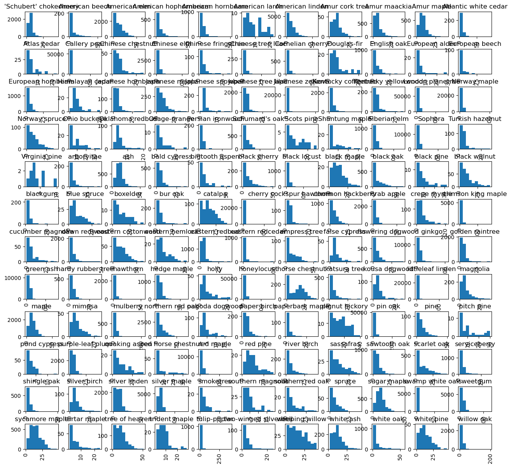
Density Plots #
Two-or-more-variables-visualization#
Categorical Variables #
There are many visualization options for multiple categorical variables such as: side by side graphs, grouped bar graphs, stacked bar graphs, mosaic plots, tree maps, and parallel sets.
Numerical Variables#
see the air quality notebooks